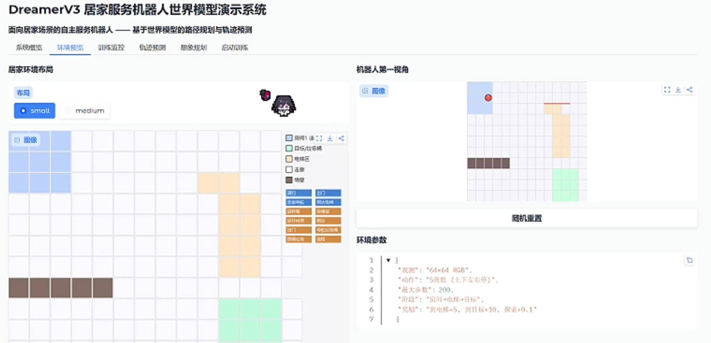
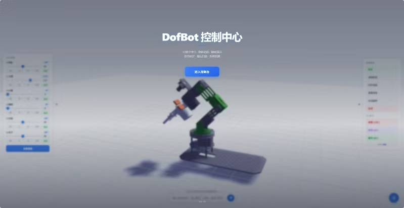
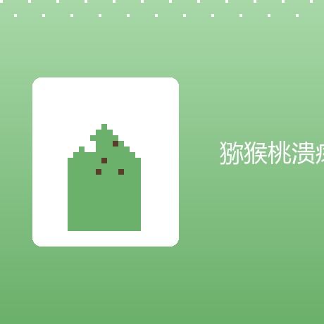

Shanshan Chen
具身智能 · 世界模型 · 机器人强化学习
Embodied AI / World Models / Model-Based RL
把鼠标移到照片上，它会放大、摆正，看看每个项目吧

RSSM 世界模型 · 想象规划 · 端到端视觉导航
Anole-7b · LoRA · 记忆银行
ShuffleNetV2 · 病害识别

机械臂 · 视觉与运动控制

SE-ResNet · 图像分类
远程办公 · 低延迟